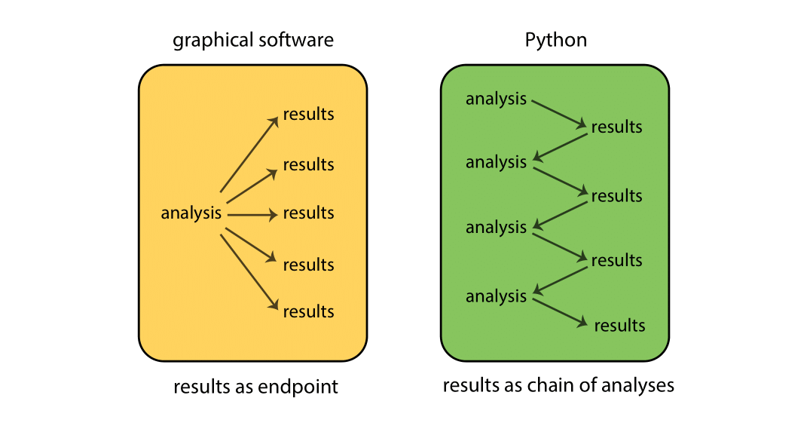
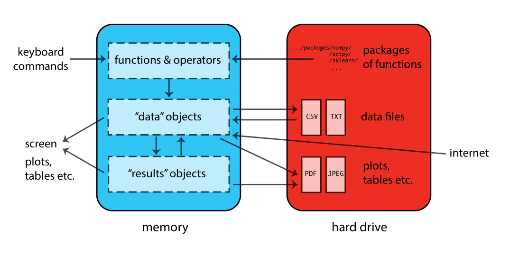
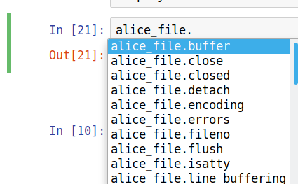
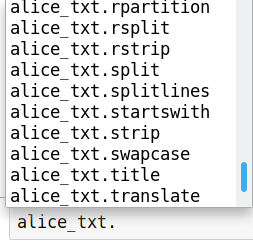
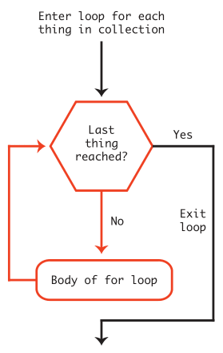
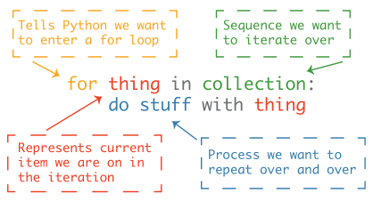

# function_name(arg1, arg2, arg3, ... argn)Python Introduction
Topics
- Functions
- Objects
- Assignment
- Finding help
- List and dictionary structures
- Indexing data structures
- Iterating over collections of data
- Importing packages
Setup
Software and Materials
Follow the Python Installation instructions and ensure that you can successfully start Positron.
A handy cheat-sheet is available to help you look up and remember basic syntax.
Class Structure
Informal - Ask questions at any time. Really!
Collaboration is encouraged - please spend a minute introducing yourself to your neighbors!
Prerequisites
This is an introductory Python course:
- Assumes no prior knowledge of how to use Python
- We do assume you know why you want to learn Python. If you don’t, and want a comparison of Python to other statistical software, see our Data Science Tools workshop
- Relatively slow-paced
Goals
We will learn about the Python language by analyzing the text of Lewis Carroll’s Alice’s Adventures in Wonderland. In particular, our goals are to learn about:
- What Python is and how it works
- How we can interact with Python
- Foundations of the language (functions, objects, assignment, methods)
- Using methods and lists to analyze data
- Iterating over collections of data to automate repetitive tasks
- Storing related data in dictionaries (as key - value pairs)
- Importing packages to add functionality
Python basics
GOAL: To learn about the foundations of the Python language.
- What Python is and how it works
- Python interfaces
- Functions
- Objects
- Assignment
- Methods
What is Python?
- Python is a free general purpose programming language
- Python is an interpreted language, not a compiled one, meaning that all commands typed on the keyboard are directly executed without requiring to build a complete program (this is like R and unlike C, Fortran, Pascal, etc.)
- Python has existed for about 30 years
- Python is modular — most functionality is from add-on packages. So the language can be thought of as a platform for creating and running a large number of useful packages.
Why use Python?
- Relatively easy to learn
- Extremely flexible: can be used to manipulate, analyze, and visualize data, make web sites, write games, and much more (Youtube and DropBox were written in Python)
- Cutting edge machine learning tools
- Publication quality graphics
- 150,000+ add on packages covering all aspects of statistics and machine learning
- Active community of users
How does Python work?
While graphical-based statistical software (e.g., SPSS, GraphPad) immediately display the results of an analysis, Python stores results in an object (a data structure), so that an analysis can be done with no result displayed. Such a feature is very useful, since a user can extract only that part of the results that is of interest and can pass results into further analyses.
For example, if you run a series of 20 regressions and want to compare the different regression coefficients, Python can display only the estimated coefficients: thus the results may take a single line, whereas graphical-based software could open 20 results windows. In addition, these regression coefficients can be passed directly into further analyses — such as generating predictions.

When Python is running, variables, data, functions, results, etc., are stored in memory on the computer in the form of objects that have a name. The user can perform actions on these objects with operators (arithmetic, logical, comparison, etc.) and functions (which are themselves objects). Here’s a schematic of how this all fits together:

Interfaces
Text editors, IDEs, & Notebooks
There are different ways of interacting with Python. The two main ways are through:
- text editors or Integrated Development Environments (IDEs): Text editors and IDEs are not really separate categories; as you add features to a text editor it becomes more like an IDE. Some editors/IDEs are language-specific while others are general purpose — typically providing language support via plugins. The following table lists a few popular editors/IDEs that can be used with Python. In this workshop, we will use JupyterLab, a modern “extensible environment for interactive and reproducible computing” that runs in your web browser.
| Editor / IDE | Features | Ease of use | Language support |
|---|---|---|---|
| Positron | Excellent | Easy | Python, R |
| Spyder | Excellent | Easy | Python only |
| PyCharm | Excellent | Moderate | Python only |
| JupyterLab | Good | Easy | Excellent |
| VS Code | Excellent | Moderate | Very good |
| Vim | Excellent | Hard | Good |
| Emacs | Excellent | Hard | Excellent |
- Notebooks: Browser-based applications that allow you to create and share documents that contain live code, equations, visualizations, and narrative text. One popular choice is Jupyter Notebook; an open source notebook that has support for 40+ languages, but has limited features compared with the JupyterLab IDE.
Source code & literate programming
There are also several different formats available for writing code in Python. These basically boil down to a choice between:
Source code: the practice of writing code, and possibly comments, in a plain text document. In Python this is done by writing code in a text file with a
.pyextension. Writing source code has the great advantage of being simple. Souce code is the format of choice if you intend to run your code as a complete script - for example, from the command line.Literate programming: the practice of embedding computer code in a natural language document. In Python this is often done using the aformentioned Jupyter Notebook, which is a JSON document containing an ordered list of input/output cells which can contain code, text (using Markdown), mathematics, plots, and rich media, usually ending with the
.ipynbextension. Jupyter Notebooks are easy to write, human-readable, and the format of choice if you intend to run your code interactively, by running small pieces of code and looking at each output. Researchers can use Notebooks to write their journal papers, dissertations, and statistics/math class notes, since it is easy to convert into other formats later, such as HTML (for a webpage), MS Word, or PDF (via LaTeX).
Here are some resources for learning more about Jupyter Notebooks:
Launch Positron
- Start Positron.
- Go to
File -> Open Folderand choose thepython-introfolder from the workshop materials on your desktop. If Positron asks which Python to use, choose the one in.venv(the installation page explainsuv sync, which creates it). - In the Explorer on the left, click the file with the word “BLANK” in the name (
intro_BLANK.ipynb). It opens in Positron’s notebook editor, with the kernel picker at the top right showing the Python from.venv.
A notebook contains one or more cells containing notes or code. To insert a new cell, use the + Code or + Markdown button. To execute a cell, select it and press Shift+Enter, or click its run button.
Syntax rules
- Python is case sensitive
- Python uses white space as part of the syntax (it’s important!)
- Variable names should start with a letter (A-Z and a-z) and can include letters, digits (0-9), and underscores (_)
- Comments can be inserted using a hash
#symbol - Functions must be written with parentheses, even if there is nothing within them; for example:
len()
Function calls
Functions perform actions — they take some input, called arguments and return some output (i.e., a result). Here’s a schematic of how a function works:

The general form for calling Python functions is
The arguments in a function can be objects (data, formulae, expressions, etc.), some of which could be defined by default in the function; these default values may be modified by the user by specifying options.
Assignment
In Python we can assign an object (data structure) to an name using the = operator.
# name = thing_to_assign
x = 10The name on the left of the equals sign is one that we chose. When choosing names, they must:
- start with a letter
- use only letters, numbers and underscores
Reading data
Reading information from a file is the first step in many projects, so we’ll use functions to read data into Python and assign them to a named object. The workshop materials you downloaded earlier include a file named Alice_in_wonderland.txt which contains the text of Lewis Carroll’s Alice’s Adventures in Wonderland. We can use the open() function to create a file object that makes a connection to the file:
alice_file = open("Alice_in_wonderland.txt")The alice_file object name we just created does not contain the contents of Alice_in_wonderland.txt. It is a representation in Python of the file itself rather than the contents of the file.
Object methods
The alice_file object provides methods that we can use to do things with it. Methods are invoked using syntax that looks like ObjectName.method(). You can see the methods available for acting on an object by typing the object’s name followed by a . and pressing the tab key. For example, typing alice_file. and pressing tab will display a list of methods as shown below.

.Among the methods we have for doing things with our alice_file object is one named read. We can use the help function to learn more about it.
help(alice_file.read)Help on built-in function read:
read(size=-1, /) method of _io.TextIOWrapper instance
Read at most size characters from stream.
Read from underlying buffer until we have size characters or we hit
EOF. If size is negative or omitted, read until EOF.
Since alice_file.read looks promising, we will invoke this method and see what it does:
alice_txt = alice_file.read()Now let’s print the first 500 characters:
print(alice_txt[:500]) # the [:500] gets the first 500 characters -- more on this later.ALICE'S ADVENTURES IN WONDERLAND
by
Lewis Carroll
CHAPTER I. Down the Rabbit-Hole
Alice was beginning to get very tired of sitting by her sister on the
bank, and of having nothing to do: once or twice she had peeped into the
book her sister was reading, but it had no pictures or conversations in
it, 'and what is the use of a book,' thought Alice 'without pictures or
conversations?'
So she was considering in her own mind (as well as she could, for the
hot day made her feel very sleepy and sThat’s all there is to it! We’ve read the contents of Alice_in_wonderland.txt and stored this text in a Python object we named alice_txt. Now let’s start to explore this object, and learn some more things about Python along the way.
Using object methods & lists
GOAL: To learn how to use methods and lists to analyze data. We will do this using the Alice text to count:
- Words
- Chapters
- Paragraphs
How many words does the text contain? To answer this question, we can split the text up so there is one element per word, and then count the number of words.
Splitting a string into a list of words
How do we figure out how to split strings in Python? We can ask Python what our alice_txt object is and what methods it provides. We can ask Python what things are using the type() function, like this:
type(alice_txt)strPython tells us that alice_txt is of type str (i.e., it is a string). We can find out what methods are available for working with strings by typing alice_txt. and pressing tab. We’ll see that among the methods is one named split, as shown below.

To learn how to use this method we can check the documentation.
help(alice_txt.split)Help on built-in function split:
split(sep=None, maxsplit=-1) method of builtins.str instance
Return a list of the substrings in the string, using sep as the separator string.
sep
The separator used to split the string.
When set to None (the default value), will split on any
whitespace character (including \n \r \t \f and spaces) and
will discard empty strings from the result.
maxsplit
Maximum number of splits.
-1 (the default value) means no limit.
Splitting starts at the front of the string and works to the end.
Note, str.split() is mainly useful for data that has been
intentionally delimited. With natural text that includes
punctuation, consider using the regular expression module.
Since the default is to split on whitespace (spaces, newlines, tabs) we can get a reasonable word count simply by calling the split method and counting the number of elements in the result. But, before we do that, we should learn more about the type of object the split method has returned.
alice_words = alice_txt.split() # returns a list
type(alice_words)listWorking with lists
The split method we used to break up the text of Alice in Wonderland into words produced a list. A lot of the techniques we’ll use later to analyze this text also produce lists, so its worth taking a few minutes to learn more about them.
Note that the displayed representation of lists and other data structures in Python often closely matches the syntax used to create them. For example, we can create a list using square brackets, just as we see when we print a list.
A list in Python is used to store a collection of items:
# create a list
y = [1, "b", 3, "D", 5, 6]As with other types in Python, you can get a list of methods by typing the name of the object followed by a . and pressing tab.
Extracting subsets from lists
Among the things you can do with a list is extract subsets of items using bracket indexing notation. This is useful in many situations, including the current one where we want to inspect a long list without printing out the whole thing.
The examples below show how indexing works in Python. First using pseudocode:
# syntax
# object[ start : end : by ]
# defaults
# object[ 0 : end : 1 ]Then using a real list:
# create a list
y = [1, "b", 3, "D", 5, 6]
y[0] # returns first element - the number 1 (yes, the index counts from zero!)
y[1] # returns second element - the letter "b"
y[ :3] # returns a list with only the first 3 elements, but index is of length 4 (0 to 3) because last index is excluded
y[2:5] # returns a list with elements 3, "D", 5
y[-1] # returns last element - the number 6
y[-4: ] # returns a list with last 4 elements[3, 'D', 5, 6]alice_words[10:19] # returns a list with words 11 through 19
alice_words[-10: ] # returns a list with the last 10 words['her',
'own',
'child-life,',
'and',
'the',
'happy',
'summer',
'days.',
'THE',
'END']Using sets to count unique items
Now that we have a list containing the individual words from Alice’s Adventures in Wonderland, we can calculate how many words there are in total using the len() (length) function:
len(alice_words) # counts elements in a data structure26445According to our above computation, there are about 26 thousand total words in the Alice text. But how many unique words are there? Python has a special data structure called a set that makes it easy to find out. A set drops all duplicates, giving a collection of the unique elements. Here’s a simple example:
# set example
mylist = [1, 5, 9, 9, 4, 5]
set(mylist){1, 4, 5, 9}Now we can count the number of unique elements in the list by getting the length len() of the set set():
len(set(mylist))4We can now use the set() function to convert the list of all words (alice_words) into a set of unique words and then count them:
len(set(alice_words)) # counts unique elements in a data structure5295There are 5295 unique words in the text.
Exercise 0
Reading text from a file & splitting
Alice’s Adventures in Wonderland is full of memorable characters. The main characters from the story are listed, one-per-line, in the file named Characters.txt.
NOTE: we will not always explicitly demonstrate everything you need to know in order to complete an exercise. Instead we focus on teaching you how to discover available methods and how use the help function to learn how to use them. It is expected that you will spend some time during the exercises looking for appropriate methods and perhaps reading documentation.
- Open the
Characters.txtfile and read its contents.
##- Split text on newlines to produce a list with one element per line. Store the result as
alice_characters. HINT: you can split on newlines using thesplitlines()method.
##
TipExercise 0 solution
- Open the
Characters.txtfile and read its contents.
characters_file = open("Characters.txt")
characters_txt = characters_file.read()- Split text on newlines to produce a list with one element per line. Store the result as
alice_characters. HINT: you can split on newlines using thesplitlines()method.
alice_characters = characters_txt.splitlines()
alice_characters['Alice',
'White Rabbit',
'Mouse',
'Dodo',
'Lory',
'Eaglet',
'Duck',
'Pat',
'Bill the Lizard',
'Puppy',
'Caterpillar',
'Duchess',
'Cheshire Cat',
'March Hare',
'Hatter',
'Dormouse',
'Queen of Hearts',
'Knave of Hearts',
'King of Hearts',
'Gryphon',
'Mock Turtle']Control flow
Sometimes we may want to control the flow of code in an analysis using choices, such as if and else statements, which allow you to run different code depending on the input. The basic form is:
if (condition) true_action else false_actionIf `condition` is `TRUE`, `true_action` is evaluated; if `condition` is `FALSE`,
the optional `false_action` is evaluated.The conditions that are evaluated use logical and relational operators to determine equivalence or make some other relational comparisons.
Logical & relational operators
Here’s a table of commonly used relational operators:
| Operator | Meaning |
|---|---|
== |
equal to |
!= |
not equal to |
> |
greater than |
>= |
greater than or equal to |
< |
less than |
<= |
less than or equal to |
These relational operators may be combined with logical operators, such as and or or, as we’ll see below.
Counting list elements
Now that we know how to split a string and how to work with the resulting list, we can split on chapter markers to count the number of chapters. All we need to do is specify the string to split on. Since each chapter is marked with the string 'CHAPTER ' followed by the chapter number, we can split the text up into chapters using this as the separator.
alice_chapters = alice_txt.split("CHAPTER ")
len(alice_chapters)13Since the first element contains the material before the first chapter, this tells us there are twelve chapters in the book.
We can also count the number of times the “Mouse” and “Duck” characters appear in a given Chapter, say Chapter 2:
mouse_count_ch2 = alice_chapters[2].count("Mouse")
print(mouse_count_ch2)
duck_count_ch2 = alice_chapters[2].count("Duck")
print(duck_count_ch2)11
1By combining choice statements with logical and/or relational operators, we can then determine which of these two characters appears more often in Chapter 2:
if mouse_count_ch2 < duck_count_ch2:
print("Mouse count is less than Duck count in Chapter II.")
elif mouse_count_ch2 > duck_count_ch2:
print("Mouse count is larger than Duck count in Chapter II.")
else:
print("Mouse count is equal to Duck count in Chapter II.")Mouse count is larger than Duck count in Chapter II.We can count paragraphs in a similar way to chapters. Paragraphs are indicated by a blank line, i.e., two newlines in a row. When working with strings we can represent newlines with \n. Paragraphs are indicated by two new lines, and so our basic paragraph separator is \n\n. We can see this separator by looking at the content.
print(alice_txt[:500]) # explicit printing --- formats text nicely
alice_txt[:500] # returns content without printing itALICE'S ADVENTURES IN WONDERLAND
by
Lewis Carroll
CHAPTER I. Down the Rabbit-Hole
Alice was beginning to get very tired of sitting by her sister on the
bank, and of having nothing to do: once or twice she had peeped into the
book her sister was reading, but it had no pictures or conversations in
it, 'and what is the use of a book,' thought Alice 'without pictures or
conversations?'
So she was considering in her own mind (as well as she could, for the
hot day made her feel very sleepy and s"\ufeffALICE'S ADVENTURES IN WONDERLAND\n\nby\n\nLewis Carroll\n\nCHAPTER I. Down the Rabbit-Hole\n\nAlice was beginning to get very tired of sitting by her sister on the\nbank, and of having nothing to do: once or twice she had peeped into the\nbook her sister was reading, but it had no pictures or conversations in\nit, 'and what is the use of a book,' thought Alice 'without pictures or\nconversations?'\n\nSo she was considering in her own mind (as well as she could, for the\nhot day made her feel very sleepy and s"alice_paragraphs = alice_txt.split("\n\n")Before counting the number of paragraphs, I want to inspect the result to see if it looks correct:
print(alice_paragraphs[0], "\n==========")
print(alice_paragraphs[1], "\n==========")
print(alice_paragraphs[2], "\n==========")ALICE'S ADVENTURES IN WONDERLAND
==========
by
==========
Lewis Carroll
==========We’re counting the title, author, and chapter lines as paragraphs, but this will do for a rough count.
len(alice_paragraphs)830Now let’s use a logical operator to find out if “Alice” or “Eaglet” appear in paragraph 11:
alice_eaglet_exist = "Alice" in alice_paragraphs[10] or "Eaglet" in alice_paragraphs[10]
alice_eaglet_existTrueExercise 1
Count the number of main characters
So far we’ve learned that there are 12 chapters, around 830 paragraphs, and about 26 thousand words in Alice’s Adventures in Wonderland. Along the way we’ve also learned how to open a file and read its contents, split strings, calculate the length of objects, discover methods for string and list objects, and index/subset lists in Python. Now it is time for you to put these skills to use to learn something about the main characters in the story.
- Count the number of main characters in the story (i.e., get the length of the list you created in previous exercise).
##- Extract and print just the first character from the list you created in the previous exercise.
##- Test whether the length of the 3rd and 8th character’s names are equal. Test whether the length of the 3rd character’s name is greater than or equal to the length of the 6th character’s name. Now test whether EITHER of the above conditions are true. HINT: use the
len()function.
##- (BONUS, optional): Sort the list you created in step 2 alphabetically, and then extract the last element.
##
TipExercise 1 solution
- Count the number of main characters in the story (i.e., get the length of the list you created in previous exercise).
len(alice_characters)21- Extract and print just the first character from the list you created in the previous exercise.
print(alice_characters[0])Alice- Test whether the length of the 3rd and 8th character’s names are equal. Test whether the length of the 3rd character’s name is greater than or equal to the length of the 6th character’s name. Now test whether EITHER of the above conditions are true. HINT: use the
len()function.
len(alice_characters[2]) == len(alice_characters[7]) or len(alice_characters[2]) >= len(alice_characters[5])False- (BONUS, optional): Sort the list you created in step 2 alphabetically, and then extract the last element.
alice_characters.sort()
alice_characters[-1]'White Rabbit'Iterating over collections of data
GOAL: To learn how to automate repetitive tasks by iterating over collections of data. We will do this using the Alice text to count:
- Words nested within paragraphs
- Paragraphs nested within chapters
This far our analysis has treated the text as a “flat” data structure. For example, when we counted words we just counted words in the whole document, rather than counting the number of words in each chapter. If we want to treat our document as a nested structure, with words forming sentences, sentences forming paragraphs, paragraphs forming chapters, and chapters forming the book, we need to learn some additional tools. Specifically, we need to learn how to iterate over lists (or other collections) and do things with each element in a collection.
There are several ways to iterate in Python, of which we will focus on for loops.
Iterating over lists using for-loops
A for loop is a way of cycling through the elements of a collection and doing something with each one. The for loop logic is:

The for loop syntax is:
for <thing> in <collection>:
do stuff with <thing>
Notice that:
- the body of the for-loop is indented. This is important, because it is this indentation that defines the body of the loop — the place where things are done.
- White space matters in Python!
A simple example:
for i in range(10):
print(i)
print('DONE.')0
1
2
3
4
5
6
7
8
9
DONE.Notice that “DONE.” is only printed once, since print('DONE.') is not indented and is therefore outside of the body of the loop.
As a simple example using the Alice text, we can cycle through the first 6 paragraphs and print each one. Cycling through with a loop makes it easy to insert a separator between the paragraphs, making it much clearer to read the output:
for paragraph in alice_paragraphs[:6]:
print(paragraph)
print('==================================')
print('DONE.')ALICE'S ADVENTURES IN WONDERLAND
==================================
by
==================================
Lewis Carroll
==================================
CHAPTER I. Down the Rabbit-Hole
==================================
Alice was beginning to get very tired of sitting by her sister on the
bank, and of having nothing to do: once or twice she had peeped into the
book her sister was reading, but it had no pictures or conversations in
it, 'and what is the use of a book,' thought Alice 'without pictures or
conversations?'
==================================
So she was considering in her own mind (as well as she could, for the
hot day made her feel very sleepy and stupid), whether the pleasure
of making a daisy-chain would be worth the trouble of getting up and
picking the daisies, when suddenly a White Rabbit with pink eyes ran
close by her.
==================================
DONE.Loops in Python are great because the syntax is relatively simple, and because they are very powerful. Inside of the body of a loop you can use all the tools you use elsewhere in Python.
Here is one more example of a loop, this time iterating over all the chapters and calculating the number of paragraphs in each chapter.
for chapter in alice_chapters[1:]:
paragraphs = chapter.split("\n\n")
print(len(paragraphs))33
29
51
45
81
84
108
74
95
88
77
73Organizing results in dictionaries
It’s often useful to store separate pieces of data that are related to one another in a dict (i.e., “dictionary”), which is designed to store key-value pairs. For example, we can calculate the number of times “Alice” is mentioned per chapter and associate each count with the chapter title it corresponds to.
The dictionary structure looks like:
# mydict = {key1:value1, key2:value2, key3:value3}A simple example:
mydict = {"apple":5, "pear":6, "grape":10}
print(mydict){'apple': 5, 'pear': 6, 'grape': 10}# compare the above dict to a list
mylist =[5, 6, 10]
print(mylist)[5, 6, 10]To associate chapter titles with “Alice” counts, we will first need to learn how to append elements to a list:
container = [] # a list
for i in range(10):
container.append(i) # append elements to the list
print(container) [0, 1, 2, 3, 4, 5, 6, 7, 8, 9]Now, with the Alice text, first we can iterate over each chapter and grab just the first line (that is, the chapter titles). These will become our keys.
chapter_titles = []
for chapter in alice_chapters[1:]:
chapter_titles.append(chapter.split(sep="\n")[0])
print(chapter_titles)['I. Down the Rabbit-Hole', 'II. The Pool of Tears', 'III. A Caucus-Race and a Long Tale', 'IV. The Rabbit Sends in a Little Bill', 'V. Advice from a Caterpillar', 'VI. Pig and Pepper', 'VII. A Mad Tea-Party', "VIII. The Queen's Croquet-Ground", "IX. The Mock Turtle's Story", 'X. The Lobster Quadrille', 'XI. Who Stole the Tarts?', "XII. Alice's Evidence"]Next, we can iterate over each chapter and count the number of times “Alice” was mentioned. These will become our values.
chapter_Alice = []
for chapter in alice_chapters[1:]:
chapter_Alice.append(chapter.count("Alice"))
print(chapter_Alice) [28, 24, 23, 31, 35, 43, 51, 39, 52, 30, 16, 23]Finally we can combine the chapter titles (keys) and “Alice” counts (values) and convert them to a dictionary.
# combine titles and counts
mydict = dict(zip(chapter_titles, chapter_Alice))
print(mydict)
# help(zip) {'I. Down the Rabbit-Hole': 28, 'II. The Pool of Tears': 24, 'III. A Caucus-Race and a Long Tale': 23, 'IV. The Rabbit Sends in a Little Bill': 31, 'V. Advice from a Caterpillar': 35, 'VI. Pig and Pepper': 43, 'VII. A Mad Tea-Party': 51, "VIII. The Queen's Croquet-Ground": 39, "IX. The Mock Turtle's Story": 52, 'X. The Lobster Quadrille': 30, 'XI. Who Stole the Tarts?': 16, "XII. Alice's Evidence": 23}Exercise 2
Iterating & counting things
Now that we know how to iterate using for-loops, the possibilities really start to open up. For example, we can use these techniques to count the number of times each character appears in the story.
- Make sure you have both the text and the list of characters. Open and read both
Alice_in_wonderland.txtandCharacters.txtif you have not already done so.
##- Which chapter has the most words? Split the text into chapters (i.e., split on “CHAPTER”) and use a for-loop to iterate over the chapters. For each chapter, split it into words and calculate the length.
##- How many times is each character mentioned in the text? Iterate over the list of characters using a for-loop. For each character, call the count method with that character as the argument.
##- (BONUS, optional): Put the character counts computed above in a dictionary with character names as the keys and counts as the values.
##
TipExercise 2 solution
- Make sure you have both the text and the list of characters. Open and read both
Alice_in_wonderland.txtandCharacters.txtif you have not already done so.
characters_txt = open("Characters.txt").read()
alice_txt = open("Alice_in_wonderland.txt").read()- Which chapter has the most words? Split the text into chapters (i.e., split on “CHAPTER”) and use a for-loop to iterate over the chapters. For each chapter, split it into words and calculate the length.
words_per_chapter = []
for chapter in alice_chapters:
words_per_chapter.append(len(chapter.split()))
print(words_per_chapter)[7, 2184, 2098, 1701, 2614, 2185, 2592, 2286, 2486, 2271, 2028, 1877, 2104]- How many times is each character mentioned in the text? Iterate over the list of characters using a for-loop. For each character, call the count method with that character as the argument.
num_per_character = []
for character in characters_txt.splitlines():
num_per_character.append(alice_txt.count(character))
print(num_per_character)[395, 20, 30, 13, 7, 3, 3, 3, 0, 0, 27, 42, 4, 30, 55, 40, 3, 3, 0, 55, 53]- (BONUS, optional): Put the character counts computed above in a dictionary with character names as the keys and counts as the values.
characters = characters_txt.splitlines()
dict(zip(characters, num_per_character)){'Alice': 395,
'White Rabbit': 20,
'Mouse': 30,
'Dodo': 13,
'Lory': 7,
'Eaglet': 3,
'Duck': 3,
'Pat': 3,
'Bill the Lizard': 0,
'Puppy': 0,
'Caterpillar': 27,
'Duchess': 42,
'Cheshire Cat': 4,
'March Hare': 30,
'Hatter': 55,
'Dormouse': 40,
'Queen of Hearts': 3,
'Knave of Hearts': 3,
'King of Hearts': 0,
'Gryphon': 55,
'Mock Turtle': 53}Importing packages
GOAL: To learn how to expand Python’s functionality by importing packages.
- Import
numpy - Calculate simple statistics
Now that we know how to iterate over lists and calculate numbers for each element, we may wish to do some simple math using these numbers. For example, we may want to calculate the mean and standard deviation of the distribution of the number of paragraphs in each chapter. Python has a handful of math functions built-in (e.g., min() and max()) but built-in math support is pretty limited.
When you find that something isn’t available in Python itself, its time to look for a package that does it. Although it is somewhat overkill for simply calculating a mean we’re going to use a popular package called numpy for this. The numpy package is listed in the materials folder’s pyproject.toml, so uv sync has already installed it.
To use numpy or other packages, you must first import them.
# import <package-name>We can import numpy as follows:
import numpyTo use functions from a package, we can prefix the function with the package name, separated by a period:
# <package-name>.<function_name>()The numpy package is very popular and includes a lot of useful functions. For example, we can use it to calculate means and standard deviations:
print(numpy.mean(chapter_Alice))
print(numpy.std(chapter_Alice))32.916666666666664
10.92747556493366Wrap-up
Feedback
These workshops are a work in progress. Suggestions and feedback are welcome: use the Request help button at the top of the page.
Resources
- IQSS
- Training materials: https://iqss.github.io/dss-training/
- Data Science Services: https://www.iq.harvard.edu/data-science-services
- Research Computing Environment: https://iqss.github.io/dss-rce/
- Graphics
- matplotlib: https://matplotlib.org/
- seaborn: https://seaborn.pydata.org/
- plotly: https://plot.ly/python/
- Quantitative Data Analysis
- numpy: http://www.numpy.org/
- scipy: https://www.scipy.org/
- pandas: https://pandas.pydata.org/
- scikit-learn: http://scikit-learn.org/stable/
- statsmodels: http://www.statsmodels.org/stable/
- Text analysis
- textblob: https://textblob.readthedocs.io/en/dev/
- nltk: http://www.nltk.org/
- Gensim: https://radimrehurek.com/gensim/
- Webscraping
- scrapy: https://scrapy.org/
- requests: http://docs.python-requests.org/en/master/
- lxml: https://lxml.de/
- BeautifulSoup: https://www.crummy.com/software/BeautifulSoup/
- Social Network Analysis
- networkx: https://networkx.github.io/
- graph-tool: https://graph-tool.skewed.de/